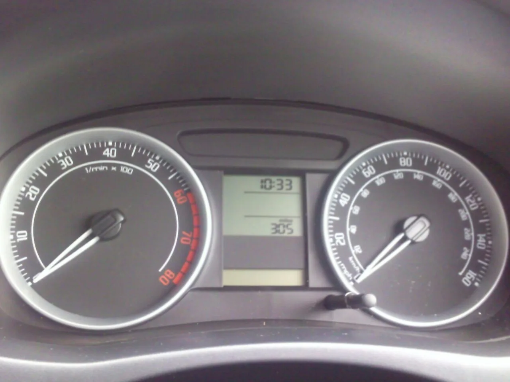
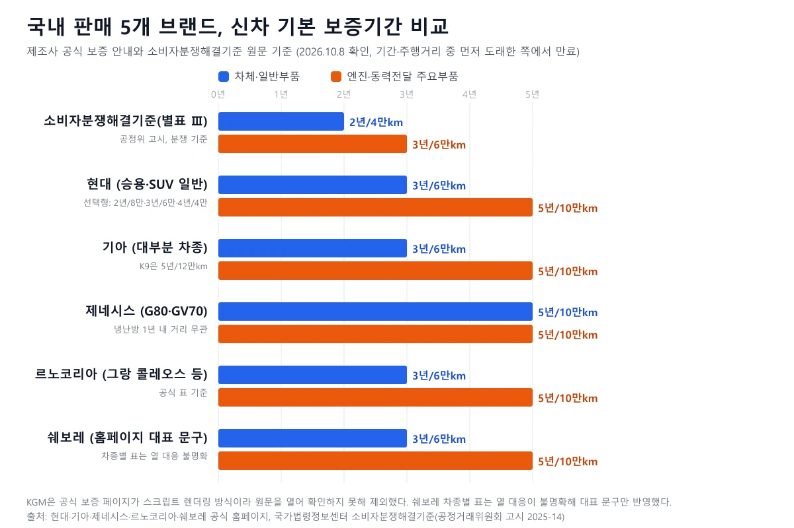
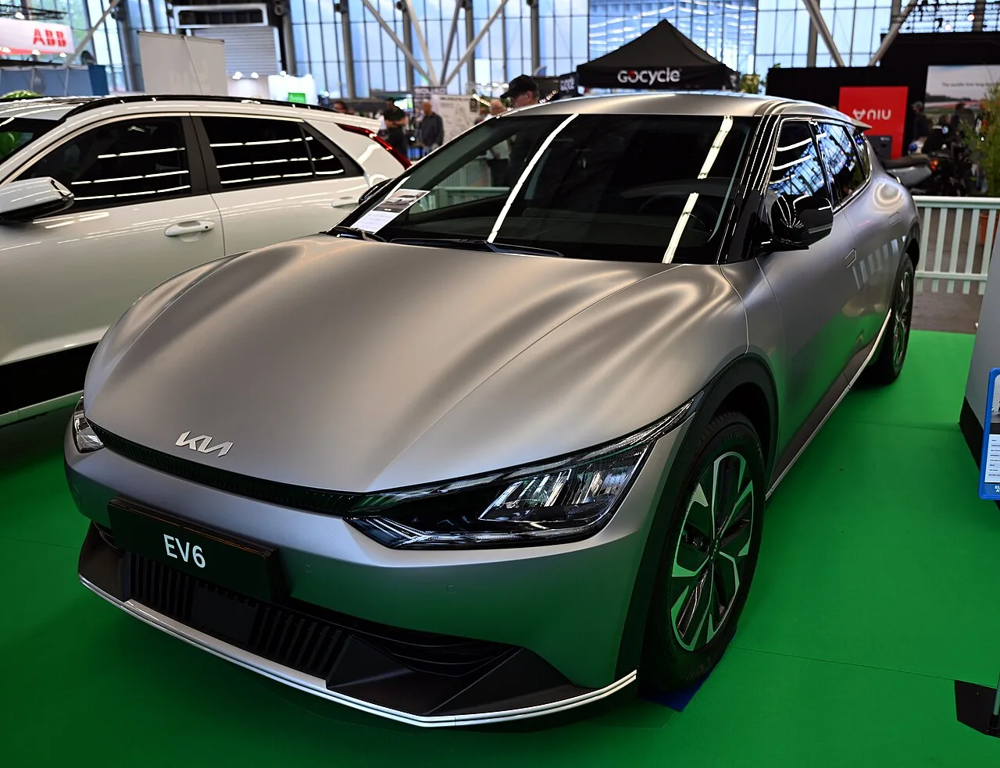
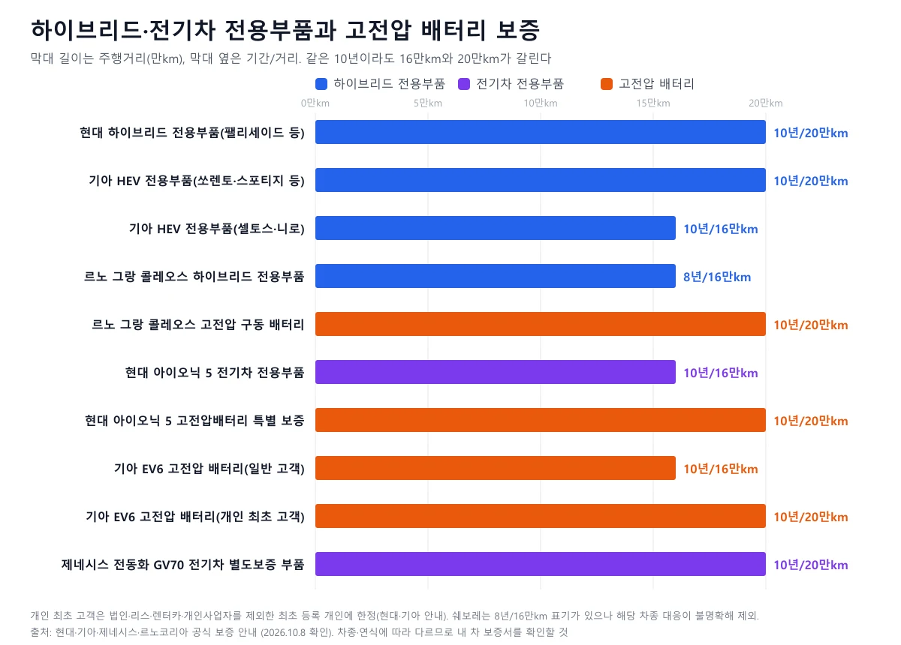
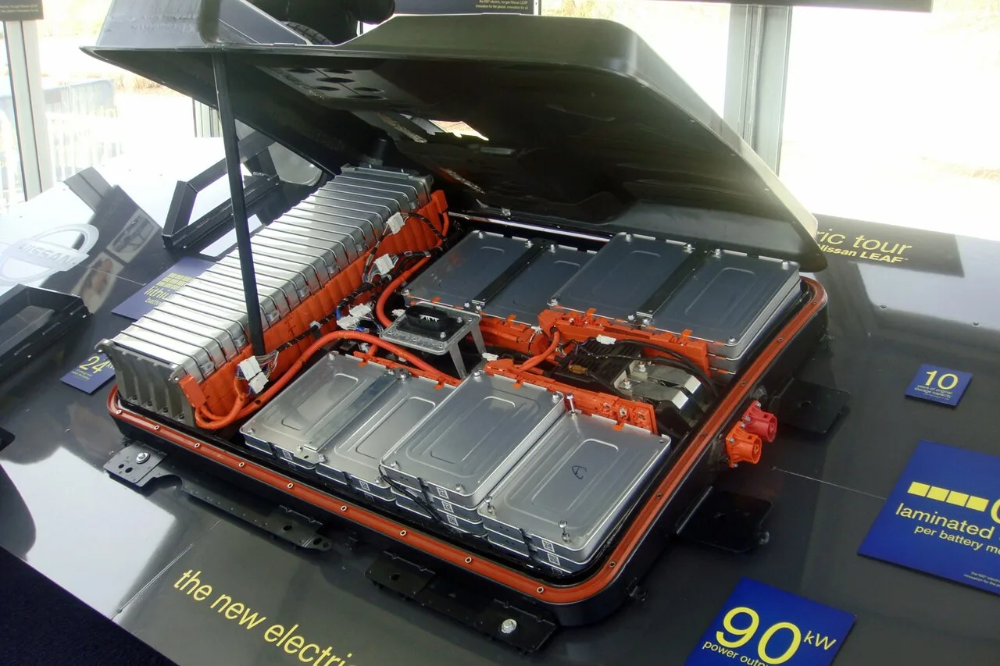
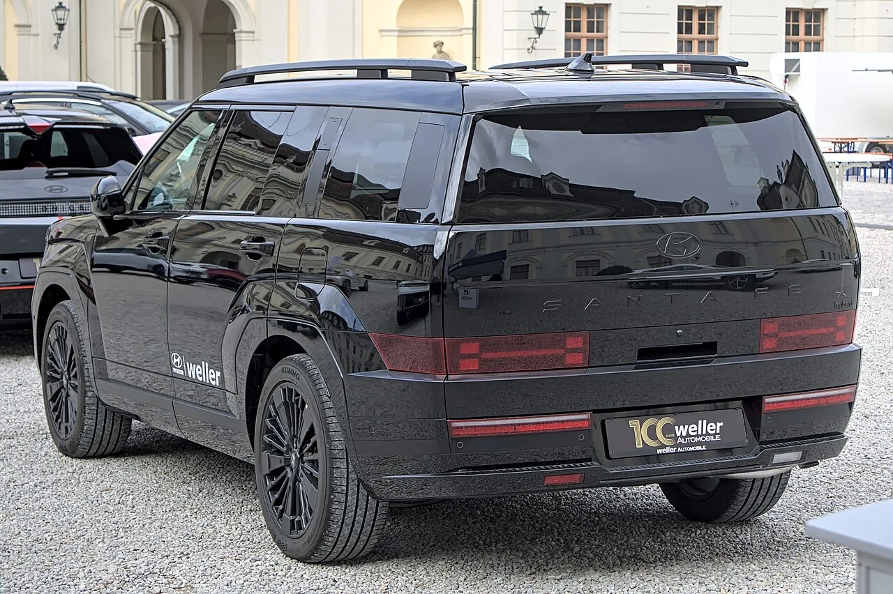
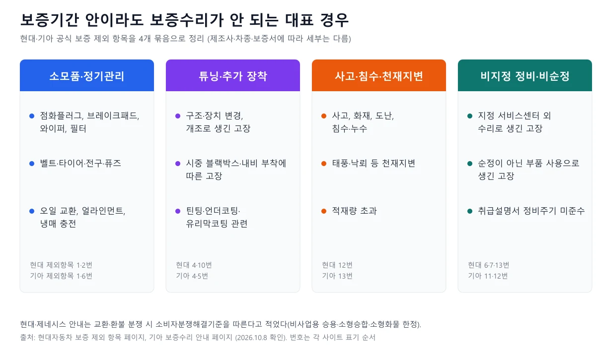

▲ 제네시스 G80(RG3). 제네시스 공식 보증 안내는 G80·GV70 등에서 차체·일반부품과 엔진·동력전달 모두 5년/10만km로 표기한다 ⓒ Benespit, Wikimedia Commons (CC BY-SA 4.0)
"신차 보증은 어디나 3년 6만km 아닌가요?" 계약서에 서명할 때는 대개 이 한 줄이면 끝난다. 그런데 제조사 공식 보증 안내 페이지를 열어 보면 일반부품은 3년인 브랜드와 5년인 브랜드가 갈리고, 엔진·동력전달은 5년, 하이브리드·전기차 배터리는 10년이지만 주행거리는 16만km와 20만km로 또 나뉜다. 이 글은 2026년 10월 8일에 현대·기아·제네시스·르노코리아·쉐보레의 공식 보증 안내와 국가법령정보센터의 소비자분쟁해결기준 원문을 직접 열어 확인한 값만 정리했다. KGM은 공식 보증 페이지 원문을 열지 못해 보증기간 표에서 뺐다. 블로그·커뮤니티 정보는 쓰지 않았고, 보증 분쟁의 결과는 제조사 약관과 보증서에 따라 달라지므로 단정하지 않는다.
1. 먼저 기준선부터 — 제조사 보증과 소비자분쟁해결기준은 다르다
신차 보증기간은 제조사가 보증서로 약속한 기간이고, 소비자분쟁해결기준은 분쟁이 생겼을 때 참고하는 공정거래위원회 고시다. 현대와 제네시스는 "보증기간은 신차 판매일로부터 적용되며, 기간 또는 주행거리 중 먼저 도래한 것을 보증기간 만료로 간주한다"고 적었고, 르노코리아도 "신차 출고일로부터 적용되며 기간, 주행거리 중 먼저 도래한 것을 만료로 한다"고 같은 방식을 쓴다. 쉐보레는 출고일 기준이다. 그래서 4년째에 주행거리가 이미 6만km를 넘었다면 일반부품 보증은 이미 끝난 것이다.

▲ 보증은 기간과 주행거리 중 먼저 도래한 쪽에서 끝난다. 계기판의 총 주행거리가 보증 한도(4만·6만·10만km 등)와 맞물린다(스코다 파비아 II 계기판, 참고용 사진) ⓒ Alan from Crawley, Wikimedia Commons (CC BY 2.0)
법 쪽 기준은 국가법령정보센터의 소비자분쟁해결기준(공정거래위원회 고시 제2025-14호, 2025년 12월 18일 시행)이다. 이 고시 별표 Ⅲ '품목별 품질보증기간 및 부품보유기간'의 자동차 항목은 아래와 같다. 이번 글에서 원문 XML로 직접 확인했다.
| 구분 | 품질보증기간 | 비고 |
|---|---|---|
| 차체 및 일반부품 | 2년 이내, 주행거리 4만km 초과 시 만료 | 출고 시 장착된 내장형 내비게이션 포함 |
| 원동기(엔진)·동력전달장치·고전원전기장치·수소연료생산시스템 | 3년 이내, 주행거리 6만km 초과 시 만료 | 고전원전기장치는 구동축전지·전력변환장치·구동전동기·연료전지 등 작동전압이 직류 60V 초과 1,500V 이하 등인 장치로 정의 |
| 외판 관통부식 | 5년 | 후드·도어·필러·휀더·트렁크리드·도어사이드실·루프 |
| 부품보유기간 | 동일 형식 자동차를 최종 판매한 날부터 8년 | 성능·품질상 하자가 없는 범위에서 유사부품 사용 가능 |
이번에 확인한 제조사 보증기간은 이 기준보다 길게 표기돼 있다. 다만 제조사가 보증서에 더 긴 기간을 적었을 때 분쟁 해결에서 어느 쪽을 우선하는지는 이번 고시 원문 확인에서 찾지 못했다. 현대와 제네시스 안내는 교환·환불 분쟁에 한해 소비자분쟁해결기준에 따른다고 적고 있다. 실제 분쟁이 생기면 한국소비자원 등 상담 창구에서 확인하는 편이 안전하다. 고시 원문은 아래에서 볼 수 있다. 소비자분쟁해결기준 바로가기
2. 브랜드별 일반부품·엔진·동력전달 보증 — 5개 브랜드 공식 표
일반부품이 3년인지 5년인지가 브랜드 차이의 거의 전부이고, 엔진·동력전달은 모두 5년이다. 아래 표는 각 사 공식 페이지에서 확인한 값이다. 현대 승용·SUV 표는 그랜저·쏘나타·아반떼·싼타페·투싼 등에서 일반부품 3년/6만km(선택형 보증제도 대상), 엔진·동력전달 5년/10만km로 같았다.
| 브랜드 | 차체·일반부품 | 엔진·동력전달 주요부품 | 확인 범위·특이사항 |
|---|---|---|---|
| 현대 | 3년/6만km(선택형 보증제도 대상) | 5년/10만km | 승용·SUV 표. 선택형은 2018년 1월 1일 이후 출고 승용·SUV(택시·아이오닉 9 제외)가 2년/8만·3년/6만·4년/4만km 중 선택, 중고차 포함 횟수 제한 없이 변경 가능. 아이오닉 9는 5년/10만km(일부 부품 3년/6만km) |
| 기아 | 3년/6만km | 5년/10만km | K8·K5·K3·레이·모닝·카니발·쏘렌토·스포티지·셀토스 등. K9은 둘 다 5년/12만km, 스팅어 3.3T는 일반부품 5년/10만km, 봉고3는 2년/4만km·3년/6만km. EV 표의 EV9는 일반부품·동력전달 모두 5년/10만km |
| 제네시스 | 5년/10만km | 5년/10만km | G80·GV70·GV80·GV60·전동화 모델 확인. G90은 5년/12만km. 냉난방장치는 1년 이내 주행거리 무관, 차체 외판 녹 5년/10만km, 관통 부식 7년 |
| 르노코리아 | 3년/6만km | 5년/10만km | 필랑트·그랑 콜레오스·세닉·SM3~SM7·QM3~QM6·아르카나 공식 표. 가솔린·디젤 ECU·촉매 등은 7년/12만km, 그 외 배출가스 부품 5년/8만km |
| 쉐보레 | 3년(36개월)/6만km | 5년(60개월)/10만km | 홈페이지 '쉐보레 컴플리트 케어' 대표 문구 기준. 차종별 표는 열 대응이 불명확해 대표 문구만 반영. 보증수리 때 차량등록증을 제시해 대상 고객 여부를 확인 |
| KGM | 공식 보증 페이지 원문을 열지 못해 일반부품·엔진·동력전달 기간은 확인하지 못했다 | KGM 토레스 EVX 2027 공식 가격표에는 '고전압 배터리 10년/100만km'와 '전기차 전용부품 및 외판 방청 보증기간은 보증서에 따름'이 표기돼 있다. 나머지는 보증서·고객센터에서 확인 필요 | |

▲ 5개 브랜드와 분쟁 기준의 기본 보증기간. 제네시스만 일반부품도 5년이고, 나머지는 일반부품 3년·엔진/동력전달 5년 구조다 ⓒ 카프리즘 제작 도표 (각 제조사 공식 보증 안내·소비자분쟁해결기준 기준)
표에서 놓치기 쉬운 문구가 두 가지 있다. 첫째, 엔진·동력전달 '주요부품'은 범위가 좁다. 현대와 제네시스는 실린더 헤드·블록, 밸브장치, 오일펌프·워터펌프, 자동변속기, 차동장치·액슬 같은 핵심 부품을 주요부품으로 두고, 엔진 전장품(제너레이터·알터네이터·센서·릴레이)·냉각장치·배기관·엔진 마운팅·클러치·현가·제동·조향장치 등 '주변장치'는 차체 및 일반부품의 기간과 같게 적용한다고 적었다(현대, 제네시스 G80 페이지). 둘째, 배출가스 관련 부품은 별도 기간이다. 기아·르노코리아 가솔린은 ECU·촉매 7년/12만km, 그 외 5년/8만km로 표기했고 제네시스 G80도 ECU·촉매 등 7년/12만km, 그 외 5년/10만km를 적었다.
각 사 공식 표는 아래 버튼에서 차종별로 열어 볼 수 있다. 현대는 현대 보증기간 바로가기 기아는 기아 보증수리 안내 바로가기 제네시스는 제네시스 보증안내 바로가기 르노코리아는 르노코리아 보증 바로가기 쉐보레는 쉐보레 보증기간 바로가기 에서 확인한다.
3. 하이브리드·전기차 — '10년'은 같아도 km가 다르다
고전압 배터리 10년 보증은 흔하지만, 주행거리가 16만km인지 20만km인지는 차종과 고객 유형에 따라 달라진다. 아래는 공식 페이지에서 확인한 대표 행이다. 모든 차종을 다 담지 못했으니 내 차 모델은 각 사 페이지에서 직접 확인해야 한다.
| 브랜드·차종 | 전용부품 | 고전압 배터리 | 조건·비고 |
|---|---|---|---|
| 현대 팰리세이드·싼타페·코나·투싼 Hybrid | 하이브리드 전용 10년/20만km | 전용부품에 포함(고전압배터리·구동모터·HPCU) | 그랜저·쏘나타·아반떼·아이오닉 Hybrid도 같은 열. 일부 구형은 '최초 개인 고객 한정 고전압배터리 평생 보증' |
| 현대 아이오닉 5·캐스퍼 EV | 전기차 전용 10년/16만km | 고전압배터리 특별 보증 10년/20만km | 전용부품은 고전압배터리·구동모터·감속기·인버터·ICCU(LDC+OBC)·VCU |
| 기아 쏘렌토·스포티지·카니발 HEV | HEV 전용 10년/20만km | 10년/20만km | K8 HEV는 개인 최초 고객 대상 평생 보증을 삭제해 전 고객 동일 조건 |
| 기아 셀토스·니로 HEV | HEV 전용 10년/16만km | 10년/20만km | 니로(2022.1.25 출시)부터 고전압 배터리 10년/20만km(최초·일반 동일) |
| 기아 EV6·EV3 | EV 전용 10년/16만km | 10년/16만km | 개인 최초 고객 한정 10년/20만km. EV5·EV4는 일반 고객도 10년/20만km |
| 기아 EV9 | EV 전용 10년/20만km | 10년/16만km | 개인 최초 고객 한정 10년/20만km. 일반부품·동력전달은 5년/10만km로 표기 |
| 제네시스 전동화 G80·GV70·GV60 | 전기차 별도보증 부품 10년/20만km | 전용부품에 포함(고전압배터리 등) | 차체 일반·냉난방·동력전달장치는 5년/10만km |
| 르노 그랑 콜레오스·필랑트 | 하이브리드 전용 8년/16만km | 고전압 구동 배터리 10년/20만km | 세닉 E-Tech은 구동 배터리 10년/16만km, 충전 부품 3년/6만km, 구동모터·제너레이터 5년/10만km |
| 쉐보레 | 전기차·하이브리드 전용부품 8년/16만km 표기가 있으나 해당 차종 대응이 불명확해 반영하지 않았다 | 쉐보레 보증서 확인 필요 | |

▲ 기아 EV6 전시 차량. EV6의 고전압 배터리는 일반 고객 10년/16만km, 개인 최초 고객 10년/20만km로 기아 EV 보증 안내에 표기돼 있다 ⓒ Jan Ainali, Wikimedia Commons (CC BY-SA 4.0)

▲ 같은 10년이라도 16만km와 20만km로 갈린다. 개인 최초 고객 조건이 붙은 항목은 중고차로 넘어가면 달라진다 ⓒ 카프리즘 제작 도표 (현대·기아·제네시스·르노코리아 공식 보증 안내 기준)
세 가지를 같이 읽어야 한다. 첫째, '개인 최초 고객'은 법인·리스·렌터카·개인사업자를 제외한 최초 등록 당시 소유 개인이다(현대는 "최초고객은 신차 구매 고객으로 해당차량을 최초 등록할 당시 소유 고객, 개인만 해당, 개인사업자/법인/리스/렌탈 제외"라고 적었다). 둘째, 현대는 "고전압 배터리의 성능 저하 정도가 차량 사용에 따른 정상적인 노화 수준인 경우"를 보증 제외 항목에 넣고 정상 노화 판단은 "당사의 내부 품질 기준에 따른다"고 적었다. 기아도 배터리 보증 제외 사유에 "충전, 방전에 대한 자연 성능 저하"를 포함한다. 즉 10년/20만km라고 해서 용량이 줄면 무조건 교체해 주는 것은 아니다. 셋째, 르노코리아는 일부 모델 표에 구동 배터리 용량 보증 비율(예: 아르카나 하이브리드 63%)을 적었지만 그랑 콜레오스에는 이 문구를 확인하지 못했다.

▲ 전기차 구동 배터리 팩 전시품(닛산 리프용, 참고 사진). 제조사 안내는 고전압 배터리의 자연적인 성능 저하를 보증에서 제외한다고 적고 있다 ⓒ Mariordo Mario Roberto Duran Ortiz, Wikimedia Commons (CC BY-SA 3.0)
소비자분쟁해결기준의 '고전원전기장치 3년/6만km'와 제조사의 10년이 얼마나 다른지, 중고 하이브리드의 평생 보증이 어떻게 사라지는지는 이미 정리한 기사가 있다. 배터리 보증 조건은 평생 보증이라더니 중고로 넘어가자 사라졌다… 하이브리드 배터리의 조건에서, 중고 전기차의 배터리 상태(SOH) 확인은 주행거리보다 이 숫자를 보세요… 중고 전기차의 진짜 나이, SOH에서 볼 수 있다. 이 글은 두 기사와 겹치지 않도록 브랜드별 공식 수치 비교에 집중했다.

▲ 현대 싼타페 하이브리드(MX5) 뒷모습(해외 전시장 촬영). 현대 안내에서 싼타페 Hybrid의 하이브리드 전용 부품은 10년/20만km로 표기돼 있다 ⓒ Alexander-93, Wikimedia Commons (CC BY-SA 4.0)
4. 보증이 안 되는 경우 — 소모품·튜닝·사고·침수·비지정 정비
보증기간 안이라도 제조사가 공식 제외 항목으로 적어 둔 경우는 보증수리가 되지 않는다. 현대 '보증 제외 항목' 페이지와 기아 보증수리 안내의 제외 항목을 같은 기준으로 묶으면 아래 네 가지다.

▲ 현대·기아 공식 보증 제외 항목을 4개 묶음으로 정리했다. 번호는 각 사이트 표기 순서다 ⓒ 카프리즘 제작 도표 (현대·기아 공식 안내 기준)
| 유형 | 현대 안내 | 기아 안내 |
|---|---|---|
| 소모품 | 점화 플러그, 클러치 디스크, 브레이크패드류, 와이퍼 블레이드, 벨트류, 필터류, 러버/부쉬류, 전구류, 타이어, 스마트키 건전지 등 | 점화 플러그, 클러치 디스크, 브레이크 패드, 퓨즈, 와이퍼 블레이드, 벨트류, 필터류, 러버/부쉬류, 전구류, 타이어류 |
| 정기 관리 항목 | 연료계통 청소, 휠 얼라인먼트·밸런스, 오일 보충·교환, 냉매 충전, 브레이크 점검·조정 등 | 같은 항목을 1번 제외 항목으로 명시 |
| 추가 장착·튜닝 | 당사가 제공하지 않은 부품·액세서리 부착으로 인한 고장(블랙박스로 인한 배터리 방전, 시중 내비, 틴팅, 언더코팅, 유리막코팅 등), 성능·안전에 영향을 줄 구조·장치의 변경·개조 | 블랙박스(암전류)로 인한 배터리 방전과 트림류 고장, 시중 내비, 틴팅, 언더코팅, 유리막코팅, 법에 위반되는 개조와 개조·수리에 기인한 고장 |
| 사고·침수·재해 | 천재지변, 침수/누수, 산성비, 화재, 사고, 도난, 낙진, 염화나트륨, 적재량 초과 등으로 인한 고장 | 지진·풍수해 등 천재 또는 화재, 사고 등에 기인한 고장 |
| 정비 장소·부품 | 하이테크센터·블루핸즈가 아닌 곳에서 수리·관리해 발생한 고장, 순정이 아닌 시중 유사품 사용으로 발생한 고장 | 직영 서비스센터 또는 서비스협력사(지정점) 이외의 장소에서 수리해 발생한 고장, 순정부품을 쓰지 않아 발생한 고장 |
| 주행거리계 | 임의 교체·조작으로 실제 주행거리를 확인할 수 없는 경우 | 같은 취지의 9번 제외 항목 |
| 전기차 배터리 | 고전압 배터리 성능 저하가 정상 노화 수준인 경우 | 3개월 이상 방전 방치, 비순정 충전케이블, 올바르지 않은 충전 방법, 외부 장치 암전류, 충전·방전에 따른 자연 성능 저하 등 10가지 사유 |
문구를 그대로 읽으면 대부분 '그 행위 때문에 생긴 고장'이 제외 대상이다. 예를 들어 지정점이 아닌 곳에서 오일 교환을 했다고 해서 엔진 전체 보증이 사라진다고 적혀 있지는 않다. 다만 그 수리나 부품이 고장의 원인으로 판단되면 보증이 거부될 수 있어서, 영수증·정비명세서를 보관하는 것이 안전하다. 어느 쪽으로 판단되는지는 제조사 약관과 사안에 따라 다르며 이 글은 단정하지 않는다. 차체 외판의 녹도 사고·환경오염·부적절한 언더코팅·화학약품 사용 등으로 생긴 경우는 제외 항목에 별도로 열거돼 있다(현대 6가지, 기아 8가지).
5. 보증 연장(유료) — 현대 워런티플러스와 기아 보증연장 조건
제조사 보증이 끝난 뒤 이어 주는 유료 상품은 가입 시한이 짧다. 현대 워런티플러스는 출고일 기준 2년/4만km 이내 개인·개인사업자가 블루멤버스 가입 후 현대 전 차종(포터 제외)에서 살 수 있고, 기아 보증연장은 신차 출고일 2년 이내·주행거리 6만km 미만의 개인용 승용/SUV가 대상이다. 현대는 법인 차량과 택시·리스·렌터카 등 영업용·상용 차량을, 기아는 택시·리스·렌터카를 포함한 영업용·상용 목적 차량을 구매할 수 없다고 적었다.
| 항목 | 현대 워런티플러스 | 기아 보증연장 서비스 |
|---|---|---|
| 가입 조건 | 출고 2년/4만km 이내, 개인·개인사업자, 블루멤버스 필수 | 출고 2년 이내·6만km 미만, 개인용 승용/SUV (EV는 기본보증거리 미초과 개인용) |
| 연장 구성 | 일반부품 기간 2·3·4년 중 택1, 거리 4·6·8만km 중 택1. 엔진미션은 2·3년, 4·6만km 중 택1 | 일반부품 Lite(5년형) +2년/4만km, Standard(6년형) +3년/6만km, Premium(7년형) +4년/8만km. 엔진미션은 Standard +1년/2만km, Premium +2년/4만km |
| 총 담보 한도 | 제조사 보증 포함 8년 또는 16만km 초과 불가 | 5·6·7년형 구성(EV6·EV9는 8년형 가능) |
| 가격 | 공식 카탈로그(2026.7판, 부가세 포함 여부 표기 없음) 일반부품 '3년/6만km 연장' 상품 기준 승용1(아반떼 등) 331,000원, 승용2(쏘나타 등) 541,000원, 승용3(그랜저) 814,000원, RV1(투싼·코나 등) 501,000원, RV2(싼타페·팰리세이드 등) 664,000원 | 쏘렌토·카니발 출고 90일 이내 Lite 61·Standard 113·Premium 168만원, 90일 이후 73·133·199만원(표기 단위 만원, 부가세 포함 여부 표기 없음) |
| 할인·요율 | 출고 90일 이내 구입 시 15%, 일반+엔진미션 동시 구입 시 10% 할인(중복 가능) | 출고 90일 이후 가입은 중고차 요율이 적용돼 가격이 오른다 |
| 고객 부담금 | 입고 시 최대 33,000원(부가세 포함). 안내문은 2021년 9월 출시 상품 기준이며 기존 보증연장 상품은 이미 발송된 약관을 따른다고 적었다 | 수리비 외 교통비·운휴손실·유류비 등 간접비용은 보상하지 않는다 |
| 환불·철회 | 구매 30일 이내 전액, 이후 판매가격의 20% 위약금 공제 후 중도해지(서비스 개시 후는 경과 기간·수리비용도 차감) | 가입 시 제공한 약관에 따라 철회 가능(구체 조건은 확인하지 못함) |
| 제외 대상 | 일부 마모·소모성 부품 제외, 순정부품 기준. 하이브리드·전기차·수소전기차 전용부품과 배출가스 관련 부품은 대상에서 제외되고 전기차·수소전기차는 일반부품 상품만 살 수 있다(카탈로그 표기) | 소모성 부품, 정상 관리 항목, 외부 충격 고장, 누수·바람소리 등 감각적 현상, EV 전용부품(PV5 제외)은 연장 대상 아님 |
기아 EV 보증연장은 일반부품·동력전달부품과 배터리를 따로 판다. 공식 가격표 기준 배터리 연장은 EV3·EV4·EV6가 +10만km 275만원(총 30만km), +20만km 415만원(총 40만km)이고 EV9는 300만원·460만원이다. 가격표는 기본 보증 10년/20만km를 '개인 최초 고객 보증 기준'으로 적었다. 배터리 연장은 SOH 80% 미만일 때 수리·교환하는 방식이고, 기아의 기본 배터리 보증 기간에는 고객이 기본 보증수리로 처리한다. 현대 워런티플러스는 제네시스에는 적용되지 않으며 제네시스 차종은 제네시스 부티크(멤버스몰)에서 따로 안내한다.
르노코리아 '7년 14만큼km' 무상 보증연장은 공식 페이지에서 확인됐다. 르노코리아 그랑 콜레오스 '7년 14만큼km' 안내 페이지는 차량 출고 후 매년 1회(365일 이내) 공식 서비스 네트워크를 방문해 무상 점검을 받고 엔진오일 세트를 유상 교환하면 +1년씩, 일반부품과 엔진·동력전달 부품을 최대 7년 또는 14만km까지 무상 보증한다고 적었다. 기간·주행거리 중 먼저 도래하는 쪽에서 끝나고, 방문 이력이 없으면 이 프로그램의 효력만 상실될 뿐 신차 기본 보증(일반 3년/6만km, 엔진·동력전달 5년/10만km, 하이브리드 전용부품 8년/16만km, 구동배터리 10년/20만km)에는 영향이 없다고 밝혔다. 법인 명의 차량과 렌터카·리스, 택시 등 영업·상업 목적 차량은 제외하고, 중고차로 팔 때도 효력을 승계할 수 있으며, 2026년 9월 1일 출고 차량부터 적용된다. 또 '상세 조건은 일부 조정될 수 있다'는 문구도 있다. 필랑트 페이지는 같은 프로그램을 '7년 14만큼km' 안내로 연결한다.
MTN(2026.9.23)과 파이낸셜뉴스(2026.10.1) 보도는 대상을 필랑트와 2027년형 그랑 콜레오스를 출고하는 개인·개인사업자로 전하며, 르노코리아가 기존 유상 보증연장 비용 기준으로 그랑 콜레오스 약 166만 원, 필랑트 약 174만 원의 절감 효과가 있다고 설명했다고 보도했다. 공식 페이지에는 이 절감액과 종료일이 없고, 구체적인 약관은 확인하지 못했다.
6. 중고차로 넘기면 보증은 따라갈까 — 승계 확인표
공식 페이지에서 '승계'가 명시된 것은 제네시스 보증서, 현대 워런티플러스, 르노코리아 7년 14만큼km였고, 현대·기아·르노·쉐보레의 기본 보증 승계 문구는 확인하지 못했다. 승계 여부는 브랜드가 아니라 상품·조건마다 갈린다.
| 대상 | 확인한 내용 | 비고 |
|---|---|---|
| 제네시스 기본 보증 | "차량의 보증기간은 매매, 기증 등으로 소유자가 변경된 경우에도 동일하게 계승된다"(6.1항) | 같은 조에서 "차량 소유자 변경 시 필히 보증서 인수 필요" |
| 현대 워런티플러스 | "차량에 귀속되므로 매매·증여 등으로 소유자가 변경된 경우 자동 승계" | 총 담보기간은 제조사 보증 포함 8년/16만km 한도 |
| '개인 최초 고객' 혜택(현대·기아) | 최초 등록 당시 소유 개인에게만 부여되는 조건으로 표기. 기아 EV6는 일반 고객 10년/16만km, 최초 개인 20만km | 중고로 넘어가면 일반 조건이 되는 구조(표기상). 구체 약관은 확인하지 못함 |
| 현대·기아 기본 보증 | 이번에 열람한 페이지에서 승계 문구를 찾지 못함 | 보증서·고객센터에서 확인 필요 |
| 르노코리아 '7년 14만큼km' | "중고차로 매각 시에도 본 보증 프로그램의 효력은 승계 가능합니다"(그랑 콜레오스 안내 페이지) | 매년 점검 이력 조건 유지가 전제. 기본 보증의 승계 문구는 확인하지 못함 |

▲ 기아 쏘렌토 하이브리드(MQ4). 기아 안내에서 쏘렌토 HEV의 전용 부품과 고전압 배터리는 모두 10년/20만km다. 번호판은 촬영자가 가린 원본 그대로다 ⓒ Benespit, Wikimedia Commons (CC BY-SA 4.0)
중고차를 사는 쪽이라면 보증서(수첩)를 받고, 최초 등록일과 보증 만료 시점(기간·주행거리 중 먼저 오는 쪽)을 직접 계산해 보는 것이 가장 정확하다. 명의이전 절차와 비용은 15일 넘기면 하루 1만 원씩… 명의이전, 미루면 최대 50만 원에 정리돼 있다.
7. 보증으로 해결이 안 될 때 — 교환·환불, 리콜, 분쟁 창구
보증수리는 '고쳐 주는 서비스'이고, 같은 증상이 반복될 때의 교환·환불은 자동차관리법이 따로 정한다. 자동차관리법 제47조의2(2026년 10월 2일 시행본)는 하자 시 신차 교환·환불 보장이 들어간 서면계약으로 판매된 자동차가 안전 우려·경제적 가치 훼손 등 요건을 갖추고, 인도 후 1년 이내(주행거리 2만km를 넘으면 기간이 지난 것으로 본다)에 중대한 하자(원동기·동력전달장치·조향장치·제동장치 등)를 2회 이상 수리했는데도 재발했거나, 그 밖의 구조·장치의 같은 증상을 3회 이상 수리했는데도 재발한 경우를 요건으로 둔다. 1회 이상 수리하고 누적 수리기간이 30일을 넘은 경우도 포함되며, 소유자는 인도된 날부터 2년 이내에 교환 또는 환불을 요구할 수 있다고 적고 있다. 현대와 제네시스는 교환·환불 분쟁 시 소비자분쟁해결기준에 따른다고도 안내한다(해당 차종·용도 한정). 세부 요건과 절차는 신차 뽑자마자 또 같은 고장… 한국에도 '레몬법'은 있다에서 다뤘으므로 여기서는 반복하지 않는다. 리콜과 무상수리의 차이는 리콜인데 왜 못 받았지… 무상수리와 헷갈리면 놓치는 이유, 내 차 리콜 조회는 리콜인데 통지서를 못 받았다… 차대번호로 1분 만에 확인하는 법을 참고하면 된다. 법 조문은 아래에서 확인한다. 자동차관리법 제47조의2 바로가기
8. 흔한 오해 6가지
| 오해 | 확인한 사실 |
|---|---|
| "신차 보증은 어디나 같다" | 일반부품은 현대·기아·르노·쉐보레 3년, 제네시스 5년(G90은 거리 12만km). 하이브리드·전기차 전용부품은 차종별로 16만km와 20만km가 갈린다 |
| "5년/10만km면 차 전체가 보증" | 엔진·동력전달 '주요부품'만 5년이다. 현대·제네시스 안내는 주변장치를 일반부품 기간과 같게 적용한다고 적었다 |
| "배터리 10년이면 용량이 줄면 무조건 교체" | 현대는 정상 노화 수준이면 제외, 기아는 충전·방전에 따른 자연 성능 저하를 제외한다고 적었다 |
| "중고로 사도 보증이 그대로 이어진다" | 제네시스 보증서와 현대 워런티플러스는 승계가 명시돼 있지만, '개인 최초 고객' 혜택은 최초 등록 개인에게만 부여된다 |
| "보증연장은 무조건 이득" | 현대 8년/16만km, 가입 시한(출고 2년), 수리 시 고객 부담금(현대 최대 33,000원), 소모품 제외 등 조건이 붙는다. 출고 90일 이후엔 기아도 가격이 오른다 |
| "블랙박스·썬팅을 달면 보증이 끝난다" | 제조사 문구는 '그것으로 인한 고장'을 제외한다고 적고 있다. 어떤 고장이 해당하는지는 개별 판단이라 단정하기 어렵다 |
9. 내 차 보증 점검 체크리스트
✅ 출고·정비·중고 거래 때 확인할 것
· 출고 때: 보증서에 적힌 보증 시작일(신차 판매일·출고일)과 일반부품·엔진·동력전달·전용부품·배터리별 기간/거리를 따로 적어 둔다
· 선택형 보증(현대): 2년/8만, 3년/6만, 4년/4만km 중 내 주행 패턴에 맞는지 확인한다. 중고차 포함 언제든 변경 가능하다고 안내돼 있다
· 용품·튜닝 전: 블랙박스·썬팅·언더코팅·내비 부착이 제외 항목에 걸리는지 지정점에 먼저 묻고, 시공 영수증을 보관한다
· 정비 기록: 취급설명서 주기대로 정비하고 영수증·정비명세서를 남긴다. 지정점이 아닌 곳에서 수리했다면 부품 순정 여부와 내역을 기록해 둔다
· 만료 3개월 전: 기간과 주행거리 중 먼저 오는 쪽을 계산해 보고, 지적하고 싶은 증상이 있으면 만료 전에 입고해 기록을 남긴다. 소비자분쟁해결기준은 보증기간 안에 수리를 요청했는데 사업자 사정으로 늦어진 경우 기간 경과 여부를 입고한 날 기준으로 판단한다고 적고 있다
· 연장 상품: 가입 시한(현대 출고 2년/4만km 이내, 기아 2년·6만km 미만)과 총 담보 한도, 고객 부담금, 환불 규정을 비교한 뒤 정한다
· 중고차 인수: 보증서와 최초 등록일, 개인 최초 고객 혜택 여부, 승계 조건을 서면으로 확인한다
10. 요약
제조사 공식 안내로 확인한 신차 기본 보증은 현대·기아·르노코리아 3년/6만km(일반부품)와 5년/10만km(엔진·동력전달), 제네시스 5년/10만km(G90은 12만km), 쉐보레 홈페이지 대표 문구 3년/6만km·5년/10만km다. 소비자분쟁해결기준 별표 Ⅲ의 2년/4만km·3년/6만km(고전원전기장치 포함)보다 제조사 기간이 길다. 하이브리드·전기차는 전용부품·고전압 배터리가 10년으로 길지만 16만km와 20만km가 차종별로 갈리고, 개인 최초 고객 한정 조건은 중고차로 넘어가면 달라질 수 있다.
실전 원칙은 세 가지다. 내 차 보증서의 부품별 기간·거리를 분리해 적어 두고, 소모품·튜닝·비지정 정비 등 제외 항목을 피하거나 기록으로 남기고, 보증연장은 가입 시한(출고 2년 안팎)과 승계·환불 조건을 비교한 뒤 결정한다. KGM의 보증기간 표와 쉐보레 차종별 표, 현대·기아 기본 보증의 승계 문구는 확인하지 못했다. 르노코리아 7년 14만큼km는 공식 페이지에서 확인했다. 보증 분쟁의 결과는 제조사 약관과 사안에 따라 달라진다.